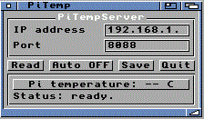

PiTempMUI A quoi ca sert ?PiTempMUI lit la temperature d'un Raspberry Pi depuis l'Amiga. C'est pratique pour surveiller un Pi qui fait tourner OctoPrint, surtout dans un boitier. Cote Raspberry PiLancez le petit serveur Python: python3 pitemp_server.py Le serveur renvoie la temperature du Pi sur le reseau local. Cote Amiga
Une temperature elevee peut etre affichee en rouge selon le seuil prevu dans le programme. |